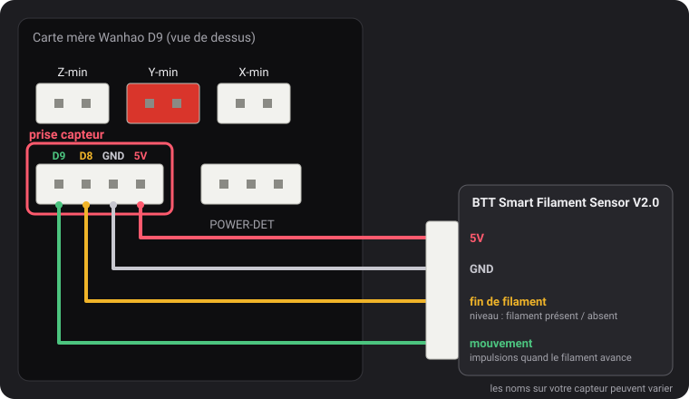

Capteurs de filament
Depuis la v2.0.5, ces firmwares lisent deux types de capteur : le détecteur de fin de filament Wanhao, et le BTT Smart Filament Sensor V2.0, qui remarque aussi quand le filament n'avance plus (bobine emmêlée, bourrage, filament rongé). La détection reste désactivée tant que vous ne l'activez pas, sauf le détecteur de fin de filament de la MK3.
La prise capteur

La prise 4 broches à gauche de POWER-DET, sous les prises des fins de course, porte D9, D8, GND et 5V, dans cet ordre. Les noms des broches viennent d'un schéma de câblage Wanhao que dustovich a retrouvé et partagé sur le Discord ; le dos de la carte marque les quatre mêmes broches CTRL, BTN, GND et VCC.
- D8 est l'entrée de fin de filament que lit le firmware Wanhao.
- D9 n'est pas utilisée par le firmware Wanhao : ces firmwares y lisent le signal de mouvement du capteur BTT.
Le détecteur de fin de filament Wanhao
Il indique au firmware si le filament est là. Quand il manque, l'impression se met en pause 5 mm de filament plus loin et l'écran lance un changement de filament.
- L'activer :
M412 S1puisM500. Le désactiver :M412 S0puisM500. - Le vérifier : envoyez
M119. La ligne filament afficheTRIGGEREDavec du filament etopensans.
BTT Smart Filament Sensor V2.0
Ce capteur a deux sorties, que le firmware lit différemment :
- Le détecteur de fin de filament (vers D8) donne un niveau : 5 V tant que le filament est là, 0 V quand il n'y en a plus.
- La sortie mouvement (vers D9) vient d'une petite roue que le filament fait tourner en passant. Tous les quelques millimètres de filament, la sortie bascule entre 0 V et 5 V. Le firmware ne regarde que ces changements : si l'extrudeur pousse une longueur donnée de filament sans un seul changement, le filament ne suit pas, et l'impression se met en pause. Le détecteur de fin de filament ne peut pas le voir : pendant un bourrage, le filament est toujours là.
Branchement
5V sur 5V, GND sur GND, le signal de fin de filament sur D8 et le signal de mouvement sur D9. Les noms imprimés sur le câble du capteur peuvent être différents.
L'activer
M412 S1 L10
M500L10 est la longueur de bourrage : l'impression se met en pause quand 10 mm de filament passent dans
l'extrudeur sans que la roue bouge. Augmentez-la (M412 S1 L15 puis M500 ; L seul est ignoré) si des impressions se
mettent en pause sans raison.
Le vérifier
M412affiche l'état : Filament runout ON ; Distance 5.00mm ; Motion distance 10.00mm.M119avec du filament : filament: TRIGGERED. Si cette ligne change quand vous poussez le filament à la main plutôt que quand vous l'insérez ou le retirez, les deux fils de signal sont inversés : échangez D8 et D9.
Pourquoi la longueur de bourrage vaut 10 km par défaut
M412 S1 active en même temps le détecteur de fin de filament et la surveillance du mouvement : Marlin
n'a qu'un seul réglage pour les deux. Sans capteur BTT sur D9, cette broche ne change jamais, ce que le firmware lit
comme « le filament n'avance pas ». Un simple détecteur de fin de filament mettrait alors des impressions en pause
pour rien, et la MK3, dont le détecteur est actif par défaut, chaque impression. Le décompte ne repart qu'à
l'allumage ou après un changement de filament lancé par le firmware (M600), pas à chaque impression, ni
quand vous chargez une bobine depuis l'écran.
La longueur de bourrage par défaut est donc de 10 km, environ 30 kg de PLA sans éteindre l'imprimante, ce qui ne se
déclenche jamais en pratique. M412 S1 L10 règle la vraie une fois le capteur BTT branché.
La v2.0.5 utilisait 100 m, environ un tiers d'une bobine de 1 kg : sur la MK3, ou avec n'importe quel détecteur de fin de filament activé, une imprimante restée allumée pouvait se mettre en pause pour rien au-delà. Passez en v2.0.6 : les réglages enregistrés avec une longueur de bourrage de 100 m ou plus, et les longueurs à zéro enregistrées par la v2.0.4 ou avant, sont remplacés par les valeurs par défaut (5 mm et 10 km) au démarrage.